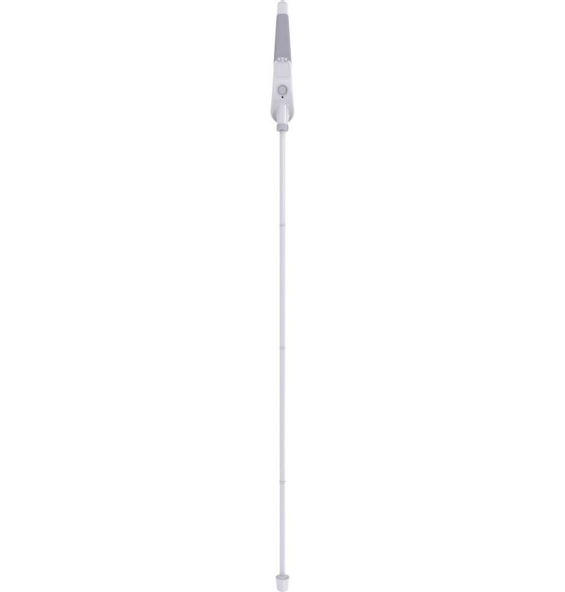

Nombre del Dispositivo
El dispositivo se llama WeWalk Smart Cane 2. Este bastón inteligente ha sido diseñado específicamente para mejorar la movilidad y la independencia de las personas invidentes. Con una mezcla de tecnología avanzada y un diseño intuitivo, WeWalk busca transformar la forma en que las personas ciegas interactúan con su entorno.
WeWalk fue fundado por Umut Güneş, un joven turco que, tras darse cuenta de las dificultades que enfrentan las personas con discapacidad visual en su vida diaria, decidió innovar. Desde su lanzamiento, el bastón ha evolucionado gracias a los avances tecnológicos.
Beneficios del WeWalk Smart Cane 2
El WeWalk Smart Cane 2 aporta numerosos beneficios que mejoran la vida de sus usuarios, entre los que destacan:
- Aumento de la independencia: Permite a los usuarios moverse con confianza y autonomía, facilitando pasear en espacios públicos y privados.
- Detección de obstáculos: Su sensor de ultrasonido alerta a los usuarios sobre objetos en su camino, mejorando la seguridad al caminar y reduciendo el riesgo de accidentes.
- Acceso a información en tiempo real: Gracias a la conectividad con telefonos, los usuarios pueden recibir información instantánea sobre su entorno, como direcciones y lugares cercanos.
- Interacción social: Facilita la comunicación con amigos y familiares mediante la función de compartir ubicación, aumentando la tranquilidad.
- Fomento de la confianza: La tecnología proporciona a los usuarios un mayor control y confianza en su capacidad para vivir de manera independiente.
Características del WeWalk Smart Cane 2
El WeWalk Smart Cane 2 está equipado con varias características avanzadas que lo distinguen de otros dispositivos:
- Sensor de ultrasonido: Detecta obstáculos a una distancia de hasta 4 metros y alerta al usuario mediante vibraciones.
- Conectividad Bluetooth: Se conecta a una aplicación móvil que proporciona información adicional, como mapas, rutas y alertas personalizadas.
- Asistentes de voz: Compatible con Google Assistant y Siri, permitiendo a los usuarios acceder a información instantánea sobre su entorno sin necesidad de mirar la pantalla de un teléfono.
- Diseño ergonómico: El bastón es ligero y cómodo para un uso prolongado, diseñado para adaptarse a las necesidades de los usuarios.
- Función de GPS: Ofrece navegación guiada y direcciones en tiempo real, ayudando a los usuarios a llegar a su destino de manera efectiva.
- Resistencia al agua: Diseñado para ser utilizado en diversas condiciones climáticas, garantizando la durabilidad y fiabilidad del dispositivo.
- Actualizaciones periódicas: El dispositivo recibe actualizaciones regulares para mejorar su funcionalidad y agregar nuevas características.
Precio del WeWalk Smart Cane 2
El precio del WeWalk Smart Cane 2 es de €499. Este precio puede variar según el distribuidor y la región. Se recomienda verificar en la página oficial o con los distribuidores autorizados para obtener información actualizada sobre precios y disponibilidad.
Además, existen opciones de financiamiento y programas de subsidios disponibles en algunos países, lo que puede ayudar a hacer el dispositivo más accesible para quienes lo necesiten. Algunos gobiernos y organizaciones también ofrecen programas de ayuda financiera para la compra de dispositivos de asistencia.
Testimonios de Usuarios
A continuación, algunos testimonios de usuarios que han experimentado un cambio positivo en su vida diaria gracias al WeWalk Smart Cane 2:
María, 34 años: "El WeWalk ha cambiado mi vida. Ahora puedo moverme por la ciudad sin miedo a chocar con obstáculos. La vibración del bastón me avisa antes de que los vea, lo que me da una sensación de seguridad increíble."
José, 27 años: "Al principio era escéptico sobre un bastón inteligente, pero después de probar el WeWalk, me di cuenta de cuánto me ayuda. La integración con mi teléfono hace que sea fácil recibir direcciones sin tener que detenerme a mirar la pantalla."
Ana, 45 años: "Desde que tengo el WeWalk, he podido explorar nuevos barrios y hacer cosas que nunca pensé que podría hacer. Me siento más independiente y feliz."
Contacto
Para más información sobre WeWalk Smart Cane 2, puedes contactar a:
Email: info@wewalk.io
Teléfono: +1-800-987-6543
También puedes seguirnos en nuestras redes sociales para actualizaciones y noticias:
Más Información
Para obtener más información sobre WeWalk Smart Cane 2, visita su sitio oficial: wewalk.io.
En el sitio oficial encontrarás recursos adicionales, como manuales de usuario, videos tutoriales y testimonios de usuarios que han mejorado su movilidad y calidad de vida gracias a este dispositivo.
WeWalk también ofrece un programa de soporte al cliente, donde los usuarios pueden obtener asistencia técnica y consejos sobre el uso del dispositivo.